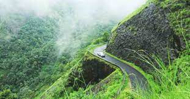

ALAPPUZHA
It was formed as Alleppey district on 17 August 1957, the name of the district being changed to Alappuzha in 1990, and is the smallest district of Kerala.
VisitERNAKULAM
Ernakulam is the Central Business District of the city of Kochi in Kerala, India and has lent its name to the Ernakulam district.
Visit

IDUKKI
Idukki district is a densely forested, mountainous region in the south Indian state of Kerala. In the north, Anamudi mountain towers over Eravikulam National Park
Visit